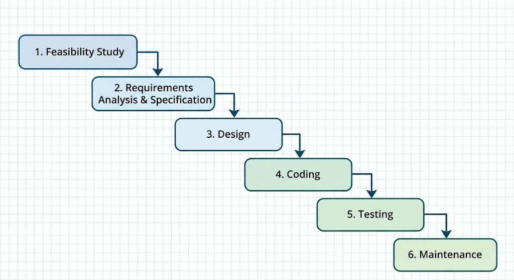
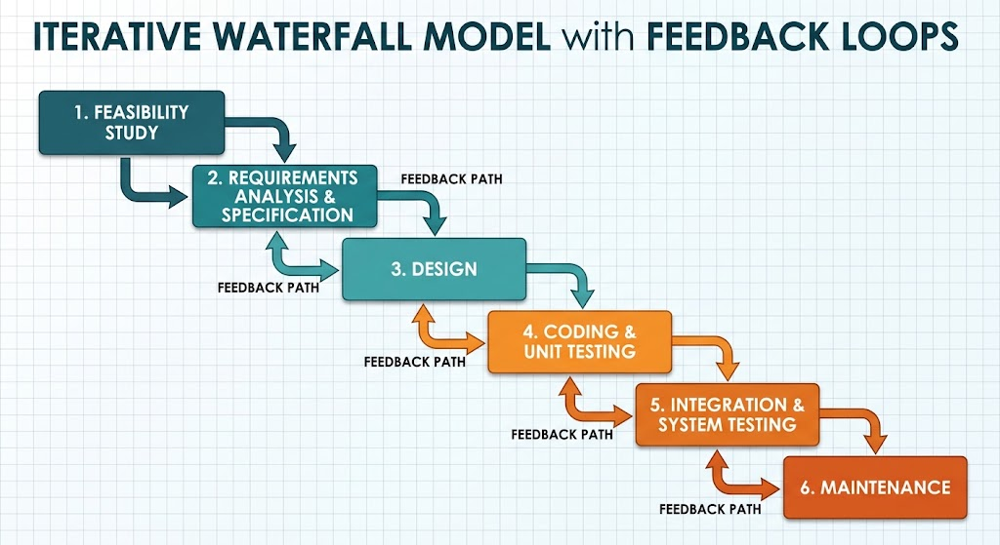
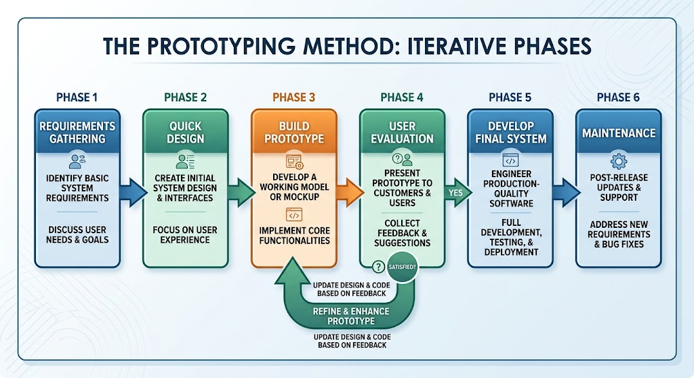
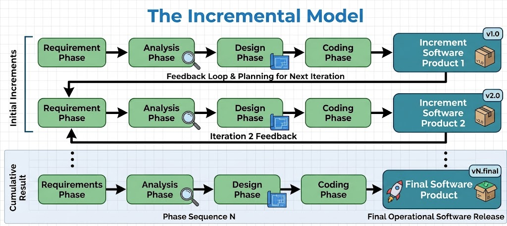
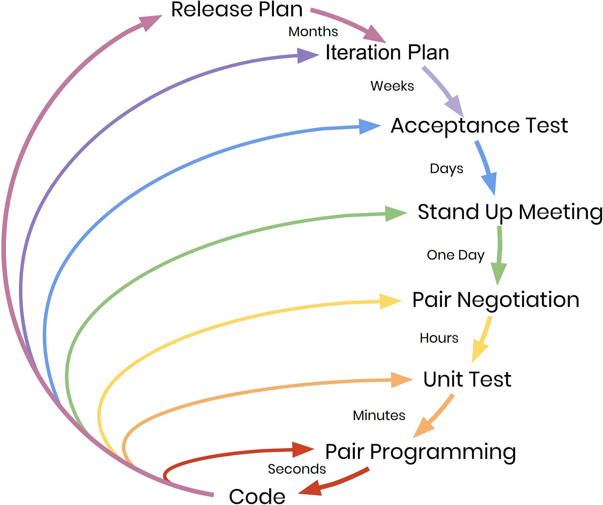

Chapter 2Software Development Processes & Agile Methodologies
In software development, perfect is a verb, not an adjective. There is no perfect process. There is no perfect design. There are no perfect stories. You can, however, perfect your process, your design, and your stories.
1Understanding Software Engineering Fundamentals
Building modern, high-quality software requires more than just writing code; it demands a structured approach to manage complexity, align with business goals, and coordinate team efforts. To understand how software development is organized, it helps to examine three foundational concepts in logical order: the Software Development Life Cycle (SDLC), Methods (or Methodologies), and Processes.
1.1The Software Development Life Cycle (SDLC): The Macro-Level Roadmap
At the highest level, every software project is governed by the Software Development Life Cycle (SDLC). The SDLC provides the macro-level conceptual framework that outlines the entire journey of a software product from conception to decommissioning. It defines the chronological stages a project must navigate—such as planning, analysis, design, development (implementation), testing, deployment, and ongoing maintenance. Think of the SDLC as the overarching architectural blueprint for the project.
Software Development Life Cycle (SDLC)
The Software Development Life Cycle (SDLC) is a structured process used to plan, design, develop, test, deploy, and maintain software. It ensures a systematic workflow and helps align software development with business goals and user requirements.
1.1.1Benefits of the software development life cycle
The Software Development Life Cycle (SDLC) provides a structured roadmap for software development by breaking the entire project journey down into distinct phases—such as planning, analysis, design, development, testing, deployment, and ongoing maintenance. Following a disciplined SDLC helps organizations overcome traditional development challenges, mitigate technical risks, and secure several core benefits:
More visibility: Keep stakeholders informed, aligned, and involved throughout the entire development process.
Example: During the development of an e-commerce platform using an SDLC model, regular milestone reviews allow the marketing, sales, and logistics teams to log in and inspect the staging environment. Because progress is mapped to transparent phases, stakeholders are never surprised by last-minute delays and can coordinate inventory and advertising campaigns well in advance.
Greater efficiency: Demystify each step of software creation, making it easier for teams to meet project deadlines and system requirements.
Example: When a financial institution builds a new mobile banking app, following a structured SDLC ensures that the development team does not waste time writing backend transaction code before the security architecture and database schema are approved. Every phase has clear entry and exit criteria, keeping the team moving forward smoothly from task to task.
Higher consistency: Ensure that every team member adheres to standardized processes, best practices, and organizational norms.
Example: In a large software enterprise where dozens of developers work on the same codebase, enforcing an SDLC guarantees that every team member follows the exact same branching strategy, code review policy, and automated testing standard before code is merged into production.
Extra time saved: Avoid confusion and costly misunderstandings by defining clear requirements at the very start of the development process.
Example: A healthcare software team spends adequate time during the initial requirements and analysis phase to document compliance rules for patient data handling. By nailing down these strict specifications early, they avoid spending months rewriting core components later due to regulatory misunderstandings.
Lower costs: Minimize wasted time and inflated budgets by reducing the likelihood of unexpected software errors and extensive reworks.
Example: An aerospace company building flight simulation software catches an arithmetic error during the design review phase rather than post-deployment. Fixing the logic error on paper costs a fraction of an hour, whereas discovering it after release could require expensive emergency patches, recalls, or hardware tests.
Better risk management: Detect and address software defects, architectural flaws, and security vulnerabilities early in the development lifecycle.
Example: A team developing a cloud-based customer portal performs threat modeling and vulnerability scanning during the design and implementation phases (shift-left security). By identifying an insecure authentication flaw early, they patch the vulnerability before malicious actors can exploit it in a live production release.
1.1.2Software development life cycle phases
The Software Development Life Cycle (SDLC) typically consists of six or seven stages, depending on the development model used.
This stage determines whether the project is technically, financially, and operationally feasible.
Activities: Feasibility analysis, cost estimation, scheduling, resource planning
Output: Project Plan, Feasibility Report
Key Roles: Project Managers, Senior Engineers, Stakeholders
In this stage, detailed functional and non-functional requirements are documented clearly and approved by stakeholders.
Activities: Requirement gathering, validation, documentation
Output: Software Requirement Specification (SRS)
Key Roles: Business Analysts, Product Owners
In this stage, the approved requirements are transformed into a technical blueprint for implementation.
High-Level Design (HLD): Defines system architecture, technology stack, database design, and major modules.
Low-Level Design (LLD): Specifies component logic, APIs, data structures, and workflows.
Output: Design Document Specification (DDS)
Developers build the software based on the approved design.
Activities: Coding, code reviews, unit testing, version control management
Tools: IDEs, version control systems, debuggers
Output: Source code, executable application
Key Roles: Frontend, Backend, Full Stack Developers
Testing ensures the software meets requirements and is free from defects before release.
Types of Testing include:
Unit Testing: Verifies individual components
Integration Testing: Ensures modules work together
System Testing: Validates the complete system
User Acceptance Testing (UAT): Confirms business requirements are met
Output: Test cases, defect reports, and quality metrics.
The tested software is released to users.
Activities: Production setup, deployment, smoke testing
Modern Approach: Continuous Integration and Continuous Deployment (CI/CD) pipelines for faster and reliable releases
Output: Live application
Key Roles: DevOps Engineers, Release Managers
Post-deployment support ensures long-term usability.
Activities: Bug fixes, performance tuning, updates, feature enhancements
Output: Patches, updates, new versions
Key Roles: Support Engineers, Developers
Planning Phase
Question: When do teams decide how to build an application and when it will be deployed by considering stakeholder needs and project feasibility?
Answer: In the Planning phase.
Analysis Phase
Question: When should a team analyze each software requirement to create a detailed list of system specifications and use-case/data-flow diagrams?
Answer: In the Analysis phase.
Design Phase
Question: When does a team decide on the overarching architecture, define component interactions, and utilize design patterns and prototyping tools?
Answer: In the Design phase.
Development Phase
Question: When do teams translate design specifications into actual code while utilizing version control systems and coding standards?
Answer: In the Development phase.
Testing Phase
Question: When does a team run comprehensive tests (such as unit, integration, system, and user testing) to assess functionality and security?
Answer: In the Testing phase.
Deployment Phase
Question: When do teams compile a final build, prepare production environments (servers, databases, network configurations), and implement rollback strategies?
Answer: In the Deployment phase.
Maintenance Phase
Question: When does continuous monitoring, bug fixing, updating features, and providing ongoing user support take place?
Answer: In the Maintenance phase.
1.1.3SDLC management tips and best practices
Enhance the efficiency and effectiveness of your software development process by adopting various tools and techniques, such as:
Establishing clear communication. Ensure all stakeholders and developers are aligned on the scope and objectives of your project to reduce the likelihood of costly reworks.
Implementing AI and low-code tools. Provide innovative tools that help teams speed up development while remaining compliant and secure.
Creating detailed documentation. Maintain a collection of records describing various aspects of your project to help onboard developers and meet regulatory standards.
Using modular designs. Break your software design down into different components and define specifications for each one to help streamline the development process.
Defining coding standards. Establish a set of strict development guidelines that help ensure the consistency and readability of your code.
Using design tools. Adopt prototyping tools to efficiently model your software, validate design concepts, and gather stakeholder feedback.
Automating tasks and processes. Offer automation capabilities that help speed up software development, testing, and maintenance using tools like Microsoft Power Automate.
1.2Methods and Models: The Strategic Approach
Once the macro-level stages of the SDLC are established, organizations must choose a development method (or methodology) to dictate how they will navigate those stages. A method establishes the strategic rules, governance, and philosophy of the project. For example:
Traditional methods (such as Waterfall) map the SDLC into a strict, sequential, one-way progression where each phase must be completed and signed off before moving to the next.
Agile methods (such as Scrum or Extreme Programming) take those same SDLC stages and organize them into short, flexible, iterative cycles focused on incremental delivery and continuous feedback.
1.3Processes: The Operational Execution
Finally, residing within methods and SDLC phases are individual processes. A process represents the specific operational workflows, tasks, and daily practices executed by team members to get work done. While a method dictates the overall strategy, the process is the hands-on execution—such as how a developer writes code during the implementation phase, how peer reviews are conducted, or how automated builds are triggered.
2Classical Waterfall Model
The Waterfall methodology is one of the earliest and most traditional software development lifecycle (SDLC) models. First formalized by computer scientist Winston Royce in a 1970 research paper, it is a linear and sequential approach to project management and software engineering.
True to its name, the process cascades downward through distinct, non-overlapping phases—much like a waterfall.

2.1Core Characteristics
Sequential Flow: Progression moves strictly one way. If an issue arises later in the lifecycle, resolving it often requires stepping all the way back to an earlier phase.
Heavy Upfront Planning: Scope, timelines, requirements, and resources are meticulously defined, documented, and locked down before any implementation starts.
Comprehensive Documentation: The model relies on detailed system requirement specifications and design documents to serve as the blueprint for every team member.
2.2The Standard Phases
2.2.1Feasibility study
The main aim of feasibility study is to determine whether it would be financially and technically feasible to develop the product.
At first project managers or team leaders try to have a rough understanding of what is required to be done by visiting the client side. They study different input data to the system and output data to be produced by the system. They study what kind of processing is needed to be done on these data and they look at the various constraints on the behavior of the system.
After they have an overall understanding of the problem they investigate the different solutions that are possible. Then they examine each of the solutions in terms of what kind of resources required, what would be the cost of development and what would be the development time for each solution.
Based on this analysis they pick the best solution and determine whether the solution is feasible financially and technically. They check whether the customer budget would meet the cost of the product and whether they have sufficient technical expertise in the area of development.
Feasibility Study Report
A document generated during the feasibility study phase that outlines whether it is financially and technically viable to develop the product, providing project managers and team leaders with a preliminary understanding of the project scope, input data streams, and desired outputs before committing resources.
Feasibility Study
Description: Investigates whether the proposed software project is economically, operationally, and technically viable before committing major resources or time.
What We Do: Analyze project goals, evaluate financial costs against potential benefits, and check if the technical team has the required capabilities and infrastructure.
Inputs: Initial project proposal, high-level business goals, stakeholder requests.
Outputs: Feasibility Report (recommending whether to proceed or drop the project).
Tools: Financial spreadsheets, project estimation worksheets, Google Docs.
2.2.2Requirements Analysis and Specification
The aim of the requirements analysis and specification phase is to understand the exact requirements of the customer and to document them properly. This phase consists of two distinct activities, namely
Requirements gathering and analysis
Requirements specification
The goal of the requirements gathering activity is to collect all relevant information from the customer regarding the product to be developed. This is done to clearly understand the customer requirements so that incompleteness and inconsistencies are removed. The requirements analysis activity is begun by collecting all relevant data regarding the product to be developed from the users of the product and from the customer through interviews and discussions. For example, to perform the requirements analysis of a business accounting software required by an organization, the analyst might interview all the accountants of the organization to ascertain their requirements. The data collected from such a group of users usually contain several contradictions and ambiguities, since each user typically has only a partial and incomplete view of the system. Therefore it is necessary to identify all ambiguities and contradictions in the requirements and resolve them through further discussions with the customer. After all ambiguities, inconsistencies, and incompleteness have been resolved and all the requirements properly understood, the requirements specification activity can start. During this activity, the user requirements are systematically organized into a Software Requirements Specification (SRS) document. The customer requirements identified during the requirements gathering and analysis activity are organized into a SRS document. The important components of this document are functional requirements, the nonfunctional requirements, and the goals of implementation.
Software Requirements Specification (SRS)
A formal document that captures the exact requirements of the customer, combining the outcomes of requirements gathering and analysis into a clear, comprehensive description that serves as a binding reference for the software to be developed.
Requirements Analysis and Specification
Description: Gathers, analyzes, and explicitly defines all functional and non-functional requirements of the system. Once this phase concludes, requirements are frozen to prevent scope creep.
What We Do: Interview stakeholders and end-users, document system constraints, and establish a clear, unambiguous behavioral contract for the software.
Inputs: Feasibility report, stakeholder interviews, domain guidelines.
Outputs: Software Requirements Specification (SRS) document, Use-Case diagrams.
Tools: Requirements management software, Jira, Balsamiq (for wireframing), Google Docs.
2.2.3Design
The goal of the design phase is to transform the requirements specified in the SRS document into a structure that is suitable for implementation in some programming language. In technical terms, during the design phase the software architecture is derived from the SRS document. Two distinctly different approaches are available: the traditional design approach and the object-oriented design approach.
Traditional design approach -Traditional design consists of two different activities; first a structured analysis of the requirements specification is carried out where the detailed structure of the problem is examined. This is followed by a structured design activity. During structured design, the results of structured analysis are transformed into the software design.
Object-oriented design approach -In this technique, various objects that occur in the problem domain and the solution domain are first identified, and the different relationships that exist among these objects are identified. The object structure is further refined to obtain the detailed design.
Design
Description: The goal of the design phase is to transform the requirements specified in the SRS document into a structure that is suitable for implementation in a programming language. The software architecture is derived directly from the SRS.
What We Do:
Conduct structured analysis of requirements specification to examine the detailed structure of the problem.
Apply traditional design approaches (transform-centered or transaction-centered data flow design) or object-oriented design.
Define module coupling, cohesion, and database schemas.
Inputs: Approved Software Requirements Specification (SRS) document.
Outputs: Software Design Document (SDD), Entity-Relationship (ER) diagrams, data flow diagrams (DFDs), and structure charts.
Tools: CASE tools, Lucidchart, Microsoft Visio, architecture blueprinting utilities.
2.2.4Coding and unit testing
The purpose of the coding phase (sometimes called the implementation phase) of software development is to translate the software design into source code. Each component of the design is implemented as a program module. The end-product of this phase is a set of program modules that have been individually tested. During this phase, each module is unit tested to determine the correct working of all the individual modules. It involves testing each module in isolation as this is the most efficient way to debug the errors identified at this stage.
Coding & Unit Testing
Description: Translates the detailed design blueprints into executable program modules using a chosen programming language, followed immediately by developer-led unit testing of individual components.
What We Do:
Write source code for each module according to design specifications.
Adhere to coding standards and guidelines.
Perform unit testing on individual functions and modules in isolation to check for local logic errors.
Inputs: Software Design Document (SDD), module interface specifications.
Outputs: Executable source code modules, passing unit test results.
Tools: Integrated Development Environments (IDEs like GCC, CLion, VS Code), debuggers, unit testing frameworks (e.g., JUnit, PyTest).
2.2.5Integration and system testing
Integration of different modules is undertaken once they have been coded and unit tested. During the integration and system testing phase, the modules are integrated in a planned manner. The different modules making up a software product are almost never integrated in one shot. Integration is normally carried out incrementally over a number of steps. During each integration step, the partially integrated system is tested and a set of previously planned modules are added to it. Finally, when all the modules have been successfully integrated and tested, system testing is carried out. The goal of system testing is to ensure that the developed system conforms to its requirements laid out in the SRS document. System testing usually consists of three different kinds of testing activities:
α – testing: It is the system testing performed by the development team.
β –testing: It is the system testing performed by a friendly set of customers.
Acceptance testing: It is the system testing performed by the customer himself after the product delivery to determine whether to accept or reject the delivered product.
System testing is normally carried out in a planned manner according to the system test plan document. The system test plan identifies all testing-related activities that must be performed, specifies the schedule of testing, and allocates resources. It also lists all the test cases and the expected outputs for each test case.
Integration & System Testing
Description: Combines independently coded modules incrementally to test their cooperative behavior, culminating in comprehensive system-wide testing against the original requirements.
What We Do:
Perform integration testing (detecting interface flaws and communication bugs between modules).
Execute system testing to ensure the integrated product fulfills operational and performance requirements.
Verify all documented test cases and log execution outputs.
Inputs: Integrated source code modules, system test plan, original SRS document.
Outputs: Tested software product, test case execution records, bug tracking logs.
Tools: Automated testing suites, test harness frameworks, bug tracking and issue management software.
2.2.6Maintenance
Maintenance of a typical software product requires much more than the effort necessary to develop the product itself. Many studies carried out in the past confirm this and indicate that the relative effort of development of a typical software product to its maintenance effort is roughly in the 40:60 ratios. Maintenance involves performing any one or more of the following three kinds of activities:
Correcting errors that were not discovered during the product development phase. This is called corrective maintenance.
Improving the implementation of the system, and enhancing the functionalities of the system according to the customer’s requirements. This is called perfective maintenance.
Porting the software to work in a new environment. For example, porting may be required to get the software to work on a new computer platform or with a new operating system. This is called adaptive maintenance.
Maintenance
Description: Addresses changes, enhancements, and defect corrections required after the software product has been delivered and deployed to the customer environment. Studies confirm maintenance consumes a major portion of total product lifecycle effort.
What We Do:
Corrective Maintenance: Repairing residual bugs or errors discovered post-release.
Adaptive Maintenance: Modifying the software to run in new or changed hardware/software environments.
Perfective Maintenance: Enhancing functionality or performance based on ongoing user requests.
Inputs: Delivered software product, customer change requests, error/fault reports.
Outputs: Software patches, version updates, updated documentation.
Tools: Version control systems, patch management tools, error log monitoring systems.
2.3Dealing with Defects in the Classical Waterfall Model
The classical waterfall model is an idealistic approach because it assumes that engineers never commit development errors during any of the life cycle phases. But In real-world environments, engineers frequently commit a large number of errors in almost every phase due to oversight, wrong assumptions, inappropriate technology, or communication gaps. These defects usually go unnoticed until much later in the life cycle—such as a design defect remaining undiscovered until the coding or testing phase. Once a defect is finally detected, engineers are forced to go back to the exact phase where the error originally occurred. They must then redo all the work done during that phase as well as all subsequent phases to fix the defect and its effects on the later stages.
Conclusion on Classical Execution: Because fixing errors requires this disruptive backward movement, the textbook notes that it is practically impossible to strictly follow the classical waterfall model in actual software development.
2.4Projects Best Suited for the Waterfall Methodology
The Waterfall methodology works best for projects that are predictable, stable, and well-understood from the very beginning. Because it is rigid and does not easily accommodate changes midway, it thrives in environments where requirements are unlikely to shift.
Here are the key types of software projects best suited for Waterfall:
1. Highly Regulated & Safety-Critical Systems
Projects where software failure can result in loss of life, injury, or catastrophic legal/financial consequences require rigorous documentation, traceability, and strict compliance audits.
Examples: Avionics/flight control software, medical device embedded systems, nuclear power plant monitoring software, and automotive braking systems.
Why it fits: Every single requirement, design decision, and test case must be meticulously documented and verified before release to pass strict government or industry certifications.
2. Fixed-Scope, Small-to-Medium Enterprise Projects
Projects where the client and development team have a crystal-clear, unchanging vision of what the final product should do before a single line of code is written.
Examples: A standardized inventory tracking tool for a local warehouse, an internal payroll calculator built on unchanging tax laws, or a fixed-function corporate landing page.
Why it fits: With a rigid scope and zero ambiguity, the project can move smoothly from requirements to maintenance without facing unexpected change requests.
3. Government, Public Sector, & Defense Contracts
Large-scale public tenders where budgets, timelines, and deliverables must be locked down legally through binding contracts before development begins.
Examples: National ID database systems, e-governance portals, or military logistics management platforms.
Why it fits: Public sector projects require predictable budgeting, fixed timelines, and comprehensive historical documentation that lawmakers and auditors can review step-by-step.
4. Projects Utilizing Mature, Stable Technologies
Projects built using established, long-standing tech stacks where the development team already possesses deep expertise and knows every technical limitation in advance.
Examples: Upgrading an established legacy system or migrating an existing relational database schema to a newer server using tried-and-tested frameworks.
Why it fits: Because there are no experimental technologies or unknown technical roadblocks, the design and implementation phases can be accurately estimated upfront.
3The Iterative Waterfall Model
To overcome the major shortcomings of the classical waterfall model, we come up with the iterative waterfall model. Here, we provide feedback paths for error correction as & when detected later in a phase.
Though errors are inevitable, but it is desirable to detect them in the same phase in which they occur. If so, this can reduce the effort to correct the bug. The advantage of this model is that there is a working model of the system at a very early stage of development which makes it easier to find functional or design flaws. Finding issues at an early stage of development enables to take corrective measures in a limited budget.

3.1Overcoming Classical Limitations: The Iterative Waterfall Model
Built-in Feedback Paths: Unlike the classical waterfall model which forces a strict, non-reversible linear flow, the iterative model introduces feedback paths from downstream phases (like testing or coding) back to upstream phases (like design or requirements).
Handling Late-Discovered Defects: When errors or design flaws are uncovered during testing, engineers can easily loop back to the preceding phases to correct them without breaking the entire development framework.
Iterative Refinement: It accommodates the reality that engineers make mistakes due to oversight or changing needs by allowing the software to be refined and re-evaluated through multiple passes or iterations.
Practical Viability: By acknowledging that requirements and designs evolve and that errors will inevitably be caught late, the iterative waterfall model provides a practical, working framework for real-world software engineering environments.
4The Prototyping Model
The Prototyping Model (often referred to as the Prototyping Approach or Prototyping-based methodology) is designed specifically to address the major weakness of the classical waterfall model: difficulty in fully understanding user requirements upfront and the risk of building the wrong system.
4.1Core Concept of the Prototyping Method
Instead of locking down all requirements in an exhaustive SRS document before any design or coding begins (as the classical waterfall model demands), the prototyping approach starts by building a quick, working model (prototype) of the system.
Initial Requirement Gathering: Collect basic, high-level requirements.
Quick Design & Prototype Construction: Build a scaled-down version or mockup of the system (focusing primarily on the user interface and core visible interactions).
User Evaluation & Feedback: Present the prototype to the customer/users. They interact with it, discover what they actually like or dislike, and provide concrete feedback.
Refining Requirements: Update and refine the system specifications based on real user feedback.
Engineering the Final Product: Once the prototype is refined and approved, the final production-quality system is built using standard development phases.

4.2Need for a prototype in software development
There are several uses of a prototype. An important purpose is to illustrate the input data formats, messages, reports, and the interactive dialogues to the customer. This is a valuable mechanism for gaining better understanding of the customer’s needs:
how the screens might look like
how the user interface would behave
how the system would produce outputs
Another reason for developing a prototype is that it is impossible to get the perfect product in the first attempt. Many researchers and engineers advocate that if you want to develop a good product you must plan to throw away the first version. The experience gained in developing the prototype can be used to develop the final product. A prototyping model can be used when technical solutions are unclear to the development team. A developed prototype can help engineers to critically examine the technical issues associated with the product development. Often, major design decisions depend on issues like the response time of a hardware controller, or the efficiency of a sorting algorithm, etc.
In such circumstances, a prototype may be the best or the only way to resolve the technical issues.
A prototype of the actual product is preferred in situations such as:
User requirements are not complete
Technical issues are not clear
4.3Integration of Prototyping in the Iterative Requirements Phase
While the classical waterfall model relies on a strict, linear progression, practical engineering environments frequently encounter scenarios where customer requirements are vague, ambiguous, or technically risky. To bridge the communication gap before freezing or finalizing the Software Requirements Specification (SRS), software teams can adopt a hybrid, evolutionary approach by integrating rapid prototyping directly into the Requirements Analysis phase of an iterative lifecycle.
Practical Workflow for Requirements Prototyping
When uncertainties arise during initial stakeholder elicitation, the requirements phase incorporates the following evolutionary loops:
Identifying Mismatches Early: If developers and customers suspect a fundamental misunderstanding regarding system features, user workflows, or interface designs during requirements gathering, a rapid, working mockup is constructed.
Proving Concepts: The customer directly interacts with the prototype to validate initial assumptions, test usability parameters, and clarify their actual operational needs.
Returning to Requirements: Once empirical feedback is gathered through the prototype, the team refines the functional specifications, updates the SRS document, and resolves ambiguities before formally moving forward into the design and coding phases.
5The Incremental Model
The incremental model is a software development approach in which the product is designed, implemented, and tested piece by piece, with a little more functionality added in each cycle until the complete system is ready. The product is considered finished only when it satisfies all of its requirements.
Incremental Model
adaptive development approach in which the deliverable is produced successively, adding functionality until the deliverable contains the necessary and sufficient capability to be considered complete.
Here is the core idea in plain language:
The complete system is broken down into several self-contained modules or builds.
The highest priority requirements are tackled first.
Each build goes through its own mini life cycle (requirements, design, coding, testing) and is then delivered as a working, usable version.
The customer uses each delivered build, gives feedback, and that feedback shapes the next build.
The process repeats until the full product is delivered.
Note
This approach combines the discipline of the waterfall model (each build still follows a linear sequence of phases) with the iterative philosophy of prototyping (learn and refine as you go).

5.1When to Use the Incremental Model
The incremental model is a strong fit when:
Requirements are mostly known, but expected to evolve. The major requirements must be defined up front so the system can be sensibly split into increments, but some details can grow over time.
Time to market is critical. You need a usable product in front of users fast, and you want to keep shipping value while the rest is built.
The project is large or complex. Breaking a big system into builds makes it manageable and reduces the chance of one catastrophic failure.
Early revenue or feedback matters. A partial product that works is worth more than a "complete" product that arrives too late.
The team is adopting new technology. Riskier or unfamiliar parts can be tackled in early increments so problems surface while they are still cheap to fix.
Budget is limited or phased. Costs can be spread across increments instead of requiring one huge upfront investment.
Stakeholders can stay engaged. The model works best when customers review each build and provide feedback.
5.2Incremental vs Iterative vs Waterfall: What is the Difference?
These three terms are often used interchangeably, but they are not the same. Getting this distinction right is one of the most common interview questions on SDLC models.
Incremental means you add whole, usable slices of functionality one at a time. Think of the food delivery example: each release added a complete, working feature (payment, then tracking, then personalization). In agile terms these are called vertical increments, because each new version is a usable product that builds on the previous one.
Iterative means you refine the same functionality through repeated cycles. You build a rough version, learn from it, and improve it in the next cycle. An iterative model often starts from an MVP (minimum viable product) and repeatedly improves it.
Waterfall is strictly sequential. All requirements are gathered up front, then design, then coding, then testing, and the customer sees the finished product only at the very end.
In practice, real projects are usually both iterative and incremental: each cycle adds a new slice (incremental) and improves earlier slices (iterative). The Agile Alliance notes that it is hard to imagine an incremental approach that is not at least somewhat iterative, even though the two concepts are distinct.
| Model | Core idea | Customer sees product | Change handling | Best for |
|---|---|---|---|---|
| Waterfall | One linear sequence of phases | Only at the end | Weak, changes are costly | Fixed, well understood requirements |
| Incremental | Add complete, usable slices one by one | Early and continuously | Good | Large projects that need early delivery |
| Iterative | Refine the same product through repeated cycles | Early (rough versions) | Good | Requirements that are unclear at the start |
| Agile | Incremental + iterative, with close collaboration and short sprints | Every sprint | Excellent | Fast moving products with active stakeholders |
6Agile Model
The Agile Model is an SDLC model focused on iterative software product development. The Agile paradigm is an incremental model in which software is built in quick increments. The most significant aspect of the Agile model is determining the project scope, requirements, number, and duration of iterations at the start of the development process—making it the ideal choice when requirements are unclear, evolving, or expected to change over time through continuous feedback.
6.1When to Use the Agile Model?
The Agile Model is best utilized under specific project conditions where flexibility, continuous feedback, and speed to market are top priorities.
Here are the key scenarios when you should use the Agile model:
Evolving Requirements: Ideal when project requirements are expected to change, grow, or evolve over time rather than being completely fixed upfront.
Frequent Feature Additions: When stakeholders or users need regular, incremental additions of new features at a minimal cost.
Rapid Time-to-Market: Suitable when there is a strong business need to deliver usable software quickly and iterate continuously, rather than waiting for a massive final release.
Complex and Innovative Projects: Effective for complex, cutting-edge projects where an adaptive, trial-and-error approach helps teams discover the best technical and functional path forward.
Active Stakeholder Engagement: Works best when customers, product owners, and end-users are readily available to review working increments and provide continuous feedback.
Cross-Functional Teams: Well-suited for collaborative teams where members share ownership and work closely together across development, testing, and deployment.
6.2Agile Manifesto and Core Foundations
The Agile Manifesto defines a flexible approach to product and software development through four core values, twelve guiding principles, and various execution practices.
6.2.14 Core Values
The foundation of the Agile philosophy is built upon four core values. These values form the bedrock of the Agile Manifesto, providing the philosophical guidance for teams that choose an Agile approach. While all parts of the manifesto have value, Agile prioritizes the items on the left side of each statement over those on the right.
| Right-Side Priorities (Valued, but not prioritized) | OVER | Left-Side Priorities (Given top priority) |
|---|---|---|
| Rigid Processes and Tools | → | Individuals and Interactions |
| Comprehensive Documentation | → | Working Software |
| Strict Contract Negotiation | → | Customer Collaboration |
| Rigidly Following a Plan | → | Responding to Change |
A Closer Look at Each Value:
Individuals and Interactions over Processes and Tools
The Right (Traditional): In traditional project management, a significant amount of emphasis is placed on established processes, methodologies, and the tools used to carry them out. The assumption is that if everyone follows the process, the project will be a success.
The Left (Agile): Agile recognizes that it is people—their talent, creativity, and ability to communicate—who ultimately create successful products. While processes and tools are still necessary, they are only useful if they enable individuals to work together effectively. A great team can overcome a poor process, but a great process will not fix a poor team.
Working Software over Comprehensive Documentation
The Right (Traditional): Traditional software development methods often involve large, initial requirements definition phases, detailed specification documents, and complex architectural diagrams. Success is often measured by whether the "done" paperwork is completed.
The Left (Agile): Agile teams believe that the most valuable progress is working software that customers can actually use. They produce minimal, essential documentation (such as user stories) and focus their primary energy on coding, testing, and getting working versions of the software in front of users as frequently as possible. Documents may define what should be, but software is what is.
Customer Collaboration over Contract Negotiation
The Right (Traditional): This viewpoint treats the development process like a transactional procurement. Teams write a complex contract at the start and then use that rigid document as the primary tool for communication with the customer.
The Left (Agile): Agile shifts the relationship with the customer from one of a rigid transaction to one of joint creation and collaboration. Successful teams invite customers into the process early and often to get their continuous feedback, ensure they are on the right track, and work together to deliver the most valuable features first. The contract should set up a structure for successful work, not create barriers to it.
Responding to Change over Following a Plan
The Right (Traditional): Success in traditional methods is often defined as following a fixed, long-term plan created at the start of a project, and any divergence is viewed negatively.
The Left (Agile): Agile teams embrace the fact that requirements will naturally change as the customer’s business evolves and as they learn more from their initial releases. Agile processes are designed to be flexible and adaptive, prioritizing the ability to respond to and learn from change rather than resisting it simply because it wasn't in the original, outdated plan. They plan in small chunks, with a clear understanding that their knowledge is partial and will grow.
Note
It's important to understand that Agile does not completely reject the items on the right. There is still a place for well-defined processes, appropriate documentation, clear contract terms, and a general plan for where the project is headed. However, in the everyday work of software development, Agile forces a different choice: When a conflict arises, prioritize the items on the left.
6.2.212 Guiding Principles
The values are supported by twelve operational tenets outlined in the Agile Manifesto:
Customer satisfaction: Achieve priority through early and continuous delivery of valuable software.
Welcome change: Harness changing requirements to give the customer a competitive advantage, even late in development.
Frequent delivery: Deliver working software frequently, ranging from a couple of weeks to a couple of months, preferring shorter timescales.
Daily collaboration: Business people and developers must work together daily throughout the project.
Motivated individuals: Build projects around trusted, supported, and motivated individuals.
Face-to-face conversation: Use direct conversation as the most efficient and effective way to convey information.
Working software as a progress measure: Measure primary progress through functional, working software.
Sustainable development: Maintain a constant, sustainable pace indefinitely for sponsors, developers, and users.
Technical excellence: Maintain continuous attention to good design and technical craftsmanship.
Simplicity: Maximize the amount of work not done—keep things as simple as possible.
Self-organizing teams: Allow the best architectures, requirements, and designs to emerge from self-organizing teams.
Regular reflection: Have the team regularly reflect on how to become more effective, then tune and adjust behavior accordingly.
6.2.3From Agile Theory to Practical Frameworks
While the Agile Manifesto establishes the foundational mindset and values, it intentionally remains broad and high-level. To bridge this gap between abstract theory and real-world execution within the Software Development Life Cycle (SDLC), organizations adopt concrete agile frameworks and methods to turn these principles into everyday workflows:
Scrum: Working in fixed-length iterations called sprints, holding daily stand-ups, sprint planning sessions, and retrospectives, backed by defined roles like the Product Owner and Scrum Master.
Kanban: Visualizing work items on a board, limiting work-in-progress (WIP), and managing continuous flow across columns to prevent bottlenecks.
Extreme Programming (XP): Using rigorous engineering practices like pair programming, continuous integration, test-driven development (TDD), and frequent refactoring to ensure high code quality.
Backlog Grooming / Refinement: Continuously prioritizing and updating the product backlog based on evolving user feedback and changing requirements.
6.3Extreme Programming
Extreme Programming (XP) is a lightweight method for developing software with constantly evolving or unclear requirements, such as business-focused systems (Type B), according to the classification previously. Like any agile method, XP embodies characteristics like short iterative development cycles, reduced emphasis on comprehensive documentation, incremental design, and development in small teams.
Extreme Programming (XP)
A disciplined Agile software development framework focused on adaptability, customer satisfaction, and high-quality code.
6.3.1Extreme Programming (XP) Phases & Workflow
The Extreme Programming life cycle operates on a continuous feedback loop that scales from multi-month planning horizons down to micro-level coding tasks in seconds.
1. Release Planning (Months)
What happens: The customer and team decide on the scope of the next release by picking high-priority user stories. This defines what features the system will deliver by a specific target date (typically a few months out).
Key Element - User Stories: Requirements are gathered and documented as lightweight user stories rather than a monolithic specification document. These stories act as the functional requirements, capturing what features the system must perform and continuously evolving as the project progresses.
Goal: Prioritize high-value features and establish a target delivery timeline spanning a few months.
2. Iteration Planning (Weeks)
What happens: A release is broken down into multiple short iterations (usually lasting 1 to 3 weeks). At the start of each iteration, the development team plans out the specific tasks required to implement that cycle's portion of the release.
Key Element - Iteration Backlog: At the start of each iteration, the development team plans out the specific tasks required to implement that cycle's features.
3. Acceptance Testing & Stand-Up (Days to One Day)
What happens: As features take shape, they are validated against business requirements.
Key Elements:
Acceptance Tests: Functional tests written by the customer (or testers) to verify that the system satisfies the user stories. A release is only considered finished and ready for customer approval once these tests pass.
Stand-up Meetings: Daily syncs for the team to align on daily progress and blockers.
4. Pair Negotiation & Unit Testing (Hours to Minutes)
What happens: Developers dive into technical execution, leveraging tight feedback loops.
Key Elements:
Pair Programming: Two developers working together at one workstation to write and continuously review code, boosting code quality and minimizing defects.
Test-Driven Development (TDD): Developers write automated unit tests before writing the actual code. Every piece of code must pass all unit tests before moving forward.
5. Coding & Small Releases (Seconds)
What happens: The micro-level code is written, integrated frequently into a shared repository, and delivered in frequent, small production increments.

6.3.2XP Core Values (Beyond the General Agile Manifesto)
While general Agile has 4 values, XP explicitly relies on six specific human and cultural values to guide day-to-day work(how teams operate in an XP environment):
Communication: Ensuring developers, customers, and managers talk constantly to avoid misunderstandings.
Simplicity: Doing "the simplest thing that could possibly work" and avoiding over-engineering (YAGNI - You aren't going to need it).
Feedback: Getting rapid signals from automated tests, customer reviews, and system deployment to catch mistakes early.
Courage: Telling the truth about estimates, discarding code that doesn't work, and being willing to refactor design.
Respect: Valuing every team member's contribution and caring about sustainable work.
Quality of Life: Ensuring developers are not overworked, preventing burnout, and maintaining a sustainable 40-hour work week.
6.3.3Extreme Programming (XP) Practices
While general Agile frameworks provide high-level principles and management structures, Extreme Programming (XP) is uniquely defined by a set of concrete, rigorous engineering and organizational techniques. The practices are categorized into how teams collaborate, write code, and deliver software.
6.3.3.1Process Practices
These practices govern how requirements are captured, planned, and delivered in short cycles:
Customer Representative: Embedding an on-site domain expert within the team who defines requirements and remains constantly available to answer questions.
User Stories: Lightweight, concise requirements (typically two to three sentences written on cards) focusing on core features from a user perspective.
Iterations & Releases: Organizing development into short, fixed cycles (iterations lasting 1 to 3 weeks) grouped into broader releases spanning a few months.
Release & Iteration Planning: Collaborative planning sessions—such as Planning Poker using Fibonacci story points—to estimate effort and map user stories to iterations.
Slack: Intentionally programming buffer tasks into iterations to absorb unexpected delays, prevent team burnout, and allow time for learning or exploration.
6.3.3.2Programming Practices
XP introduced revolutionary engineering techniques designed to maintain high code quality, short feedback loops, and robust architectural health from the project's inception:
Incremental Design: Avoiding Big Design Up Front (BDUF) in favorable of continuous design evolution, guided by principles like "Do the simplest thing that could possibly work" and YAGNI ("You aren't going to need it").
Pair Programming: Two developers working side-by-side at a single monitor—swapping roles between a Driver (controlling the keyboard) and a Navigator (reviewing code and guiding strategy)—to catch bugs early and spread team knowledge.
Test-Driven Development (TDD): Writing automated unit tests before implementing the actual functional code to ensure clarity of interface and high test coverage.
Automated Builds: Fully automating system builds so executables are generated without manual developer intervention.
Continuous Integration (CI): Frequently merging code changes (ideally daily) into a shared repository backed by automated testing to prevent "integration hell" and catch compilation or logic errors immediately.
Collective Code Ownership: Permitting any developer to modify any part of the codebase as needed, eliminating individual code silos.
6.3.3.3Project Management Practices
These practices focus on team sustainability, working conditions, and financial alignment:
Working Environment: Promoting small, dedicated teams (ideally fewer than 10 developers) working a sustainable 40-hour schedule to protect physical and mental well-being and prevent high employee turnover.
Negotiated Scope Contracts: Utilizing open-scope or hourly contracts based on continuous customer collaboration rather than rigid, fixed-scope contracts that force teams to compromise software quality under penalty clauses.
Process Metrics: Tracking key performance indicators such as the number of bugs detected in production and the time interval between project kickoff and its first financial returns.
6.3.4End-to-End Example: Building the Q&A Forum with XP
To fully understand how Extreme Programming (XP) works in practice, let’s walk through the complete lifecycle of our Q&A forum project, starting from the very first day and following the correct XP sequence.
✅ Show Solution
Step 1: Establishing the Project Cadence (The Setup)
Before any code is written or stories are gathered, the team and management agree on the project's timeboxes.
Iteration Length: 2 weeks (10 working days).
Release Length: 4 weeks (comprising two 2-week iterations).
Goal for Release 1: Deliver a functional, basic version of the forum that internal beta testers can use.
Iteration vs. Release
In XP, it is common to confuse iterations and releases because both involve delivering working software in fixed timeboxes. However, they serve entirely different purposes in the project lifecycle.
Think of it like producing a television show: an iteration is like filming a single episode, while a release is like bundling several episodes together to premiere a full season to the audience.
| Feature | Iteration | Release |
|---|---|---|
| Duration | Short and fixed (e.g., 1 to 3 weeks). | Longer, comprising multiple iterations (e.g., 1 to 3 months). |
| Primary Focus | Execution: Breaking down stories into technical tasks, coding, testing, and integration. | Planning & Value: Grouping features together to deliver a cohesive, meaningful milestone to the business or users. |
| Who Drives It? | The Development Team: They own the task breakdown, daily assignments, and technical execution. | The Customer Representative: They own the prioritization, deciding which stories go into the release to maximize business value. |
| Planning Level | Micro-planning: "How will we build these specific stories? Who does what task?" | Macro-planning (The Planning Game): "What features do we need to deliver a usable version of the product by this date?" |
| Output | A set of completed, tested user stories integrated into the main codebase. | A stable, cohesive version of the software that is ready to be shown to stakeholders, beta testers, or deployed to production. |
Step 2: Gathering User Stories
The Customer Representative (acting as the voice of the business/users) brainstorms the core features needed for Release 1 and writes them down as user stories. They present a list of 8 stories to the development team:
Register user
Post questions
Post answers
Opening screen
Gamify questions/answers
Search questions/answers
Add tags
Comment on questions/answers
Step 3: Estimating Effort (Planning Poker)
The developers must now estimate the complexity of these 8 stories. They gather in a room with the Customer Representative for a Planning Poker session.
Example Scenario: Estimating "Post Questions"
The Customer reads the story: "As a logged-in user, I want to be able to post questions. Since it’s a programming forum, questions may incorporate code blocks, which must be presented in a differentiated layout."
First Vote: The developers reveal their cards. Developer A plays a 3, but Developer B plays an 8.
Discussion: The team discusses the discrepancy. Developer B points out that standard text input is easy (3 points), but building a secure, syntax-highlighted layout for multi-line code blocks requires integrating a specific Markdown library and writing custom CSS, which is much harder.
Second Vote: Acknowledging the complexity of the code blocks, the team re-votes. Everyone agrees on 5 story points.
This process is repeated for all 8 stories until every story has a Fibonacci point value attached to it.
What Exactly Are We Estimating?
When developers assign story points during Planning Poker, they are not estimating time (hours or days). Instead, they are estimating the relative size of the story. This "size" is a composite score based on three key factors:
Complexity: How difficult is the logic or architecture?
Effort: What is the sheer volume of work required?
Risk/Uncertainty: How many unknowns or potential roadblocks exist?
Step 4: Release Planning (The Planning Game)
Now the team must figure out how much work they can actually do. Based on past experience or initial capacity planning, the team agrees their Velocity is 21 story points per iteration.
The Customer Representative now takes control of prioritization. They want the most critical features first. They look at the estimates and group the stories into iterations, ensuring no iteration exceeds the 21-point velocity limit.
Iteration 1 (21 points): Register user (8), Opening screen (5), Post questions (5), Post answers (3). Rationale: You can't have a forum without users, a homepage, and the ability to ask/answer.
Iteration 2 (21 points): Gamify (5), Search (8), Add tags (5), Comment (3). Rationale: These are secondary features that enhance the core experience.
Release planning is now complete. The team knows exactly what they are building for the next month.
| Story | Story Points | Iteration | Release |
|---|---|---|---|
| Register user | 8 | 1 | 1 |
| Post questions | 5 | 1 | 1 |
| Post answers | 3 | 1 | 1 |
| Opening screen | 5 | 1 | 1 |
| Gamify questions/answers | 5 | 2 | 1 |
| Search questions/answers | 8 | 2 | 1 |
| Add tags | 5 | 2 | 1 |
| Comment on questions/answers | 3 | 2 | 1 |
Step 5: Iteration Planning (Breaking Down the Work)
It is Monday morning, Day 1 of Iteration 1. The team gathers for Iteration Planning. They look at the 4 stories assigned to this iteration. They don't just start coding; they break the stories down into technical tasks that take a few days or less to complete.
They start with the "Post questions" story (5 points). Together, they decompose it into the following tasks:
Design: Web interface layout and CSS for code blocks. (Assigned to Alice, 1 day)
Database: Install DB, design and create
questionstables. (Assigned to Bob, 1 day)Data Access: Implement the data access layer. (Assigned to Bob, 1 day)
Framework: Install and test the web server framework. (Assigned to Charlie, 1 day)
Control Layer: Implement endpoints to register, remove, and update questions. (Assigned to Charlie, 2 days)
Frontend Integration: Implement the final web interface connecting to the backend. (Assigned to Alice, 2 days)
Adding Slack: To ensure they don't burn out and have a buffer for the unknown, the team adds a Slack Task: Research and document best practices for preventing Cross-Site Scripting (XSS) in user-submitted code blocks. (Estimated: 2 days, assigned to Charlie).
Step 6: Execution and Adapting to Reality
The iteration begins. Developers pair-program, write tests first (TDD), and communicate daily.
The Reality Check (Day 6): Bob runs into an unexpected issue. The version of the database he installed has a compatibility bug with the team's ORM (Object-Relational Mapping) tool. Task #3 (Data Access layer), which was supposed to take 1 day, has now consumed 3 days and still isn't finished.
In a traditional waterfall project, this delay would cause panic and push the deadline. In XP, the system adapts:
Bob raises the issue in the daily stand-up.
The team realizes they are going to run out of time to finish the core "Post Questions" story.
Because they planned a Slack Task (the XSS research), the team collectively agrees to drop the slack task for this iteration.
Alice, having finished her frontend design early, pairs with Bob to help him debug the database issue.
By sacrificing the low-priority slack task, the team protects the high-priority user story. The iteration stays on track.
Step 7: Iteration Review and Validation
It is Friday of Week 2, the final day of Iteration 1. The team has finished the 4 stories. They hold an Iteration Review meeting with the Customer Representative.
The developers demonstrate the working software. The Customer logs in, navigates the Opening Screen, and clicks "Post Question." They type a question and paste a block of Python code. The system successfully saves the question, and the code block is rendered in a beautiful, differentiated, color-coded layout.
The Customer Representative verifies that the implementation matches the verbal specifications and formally accepts the story. The iteration is a success.
Step 8: Moving Forward
The team holds a brief retrospective to discuss what went well and what didn't (e.g., "We need to check database version compatibility before starting a task next time").
On Monday, the cycle begins again. The team looks at Iteration 2 (Gamify, Search, Tags, Comments), breaks them down into tasks, adds new slack tasks, and begins coding.
6.3.5Frequently Asked Questions
How long should an iteration be?
There isn’t a definitive answer, as numerous factors such as team characteristics, system domain, and requirements all play a part. Short iterations—typically a week long—offer quick feedback. However, they also require more customer involvement, as new software increments need weekly validation. Moreover, stories must be simple and straightforward to fit into a 1-week iteration. Conversely, longer iterations—such as a month—grant the team more time to plan and execute tasks with reduced pressure. The trade-off is delays in receiving customer feedback, which is particularly relevant when the requirements are unclear. As a result, a 2-3 week timeframe tends to provide a balance between rapid feedback and less pressure on the team. Another useful recommendation is to experiment, testing and evaluating different durations before settling on one.
What role does the customer representative play during iterations?
At the beginning of a release, the customer representative drafts the stories to be included in that release. They then validate and approve the implementation of these stories at the end of each iteration. The representative also needs to be readily available during iterations to address questions the team may have. Since user stories contain only a few sentences, such questions are likely to arise.
How to define the team’s velocity?
There is no silver bullet for this issue. The definition depends on the team’s experience. If the team members have already participated in projects similar to the one they are starting, this is a less difficult task. Otherwise, the team needs to test and calibrate their velocity throughout successive iterations.
What if story X is prioritized before Y, despite depending on Y?
For instance, suppose the customer representative has allocated the story Post Question to iteration 2 and Post Answer to iteration 1. Although it seems contradictory, the team should respect this order as the final decision always lies with the customer representative. But then the dilemma might be How can we post responses without having questions? To resolve this issue, placeholder questions that can’t be edited by users can be used. In iteration 1, these questions will appear by default, and users will be able to respond to them.
Is integration testing a part of Extreme Programming (XP)?
In XP, testing is tiered across different levels:
Unit Testing (Continuous): Developers write automated unit tests before writing code (Test-Driven Development). Every piece of code must pass all unit tests before it can be released.
Integration Testing (Frequent): Originally, XP encouraged system-wide integration testing as a daily activity (often at the end of the day) so teams could catch incompatible interfaces early. As tooling evolved and interface stability improved, many teams shifted to continuous integration (CI) or weekly integration cycles, but testing how components interact remains central to the workflow.
Acceptance Testing (Iterative): Written by the customer (or testers representing the customer) to verify that the system satisfies business requirements and user stories. These are run frequently throughout the iterations.
So while XP emphasizes automated unit tests run constantly in the background, integrating code and testing how modules work together is still a critical pillar of keeping the shared codebase healthy and functional.